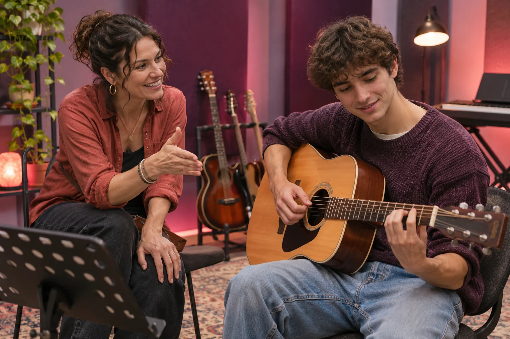

Make learning feel personal.
Offer patient, practical music education that builds skills and confidence through creative exploration.
Personal goals, clear practice steps and thoughtful feedback turn each lesson into progress you can hear.